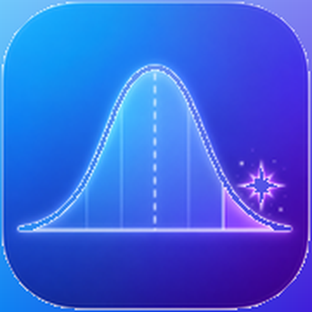
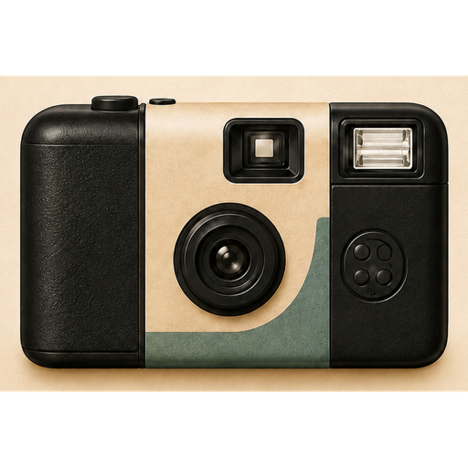
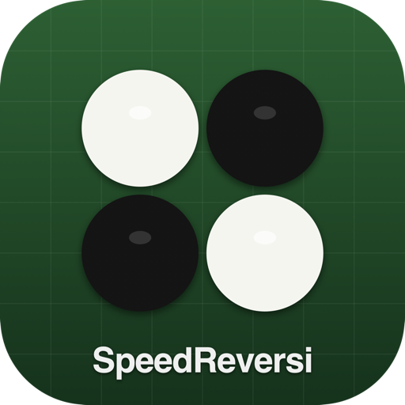

00 / 06
NANDAKANSTUDIO / SMALL APPS
日常の
「ちょっと」を、
アプリに。
家族との時間や、毎日の暮らしの中にある小さな不便を見つけ、やさしく使えるiPhoneアプリとして形にします。
NANDAKANのつくり方SCROLL TO DISCOVER ↓
家族との時間や、毎日の暮らしの中にある小さな不便を見つけ、やさしく使えるiPhoneアプリとして形にします。
派手な機能を増やすより、日常の「ちょっと困る」をひとつずつ減らす。NANDAKANStudioが大切にしている4つの考え方です。
家族や自分の暮らしの中にある、小さな困りごとを出発点にします。
迷わず使えて、毎日触れても疲れない画面と操作を大切にします。
まず形にして届け、使われながら少しずつ改善していきます。
企画・デザイン・開発・公開・改善まで、一貫した思いでつくります。
公開中・開発中のアプリと、紹介デモを掲載しています。端末内の表示は紹介用のモックで、実際のアプリ画面ではありません。配信状況は各アプリの表示をご確認ください。
つい開いてしまうアプリとの間に、小さな余白をつくる。意志だけに頼らず、集中したい時間をサポート。
IMEIをカメラから読み取り、端末状態の確認につなげる。わかりにくい確認作業を、迷わず進められる体験へ。


